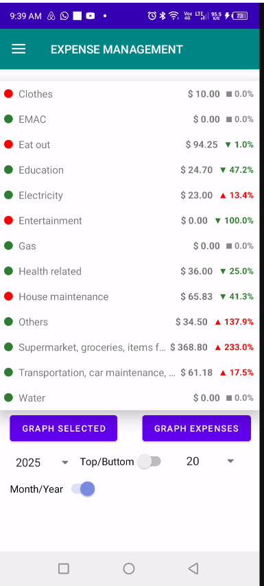
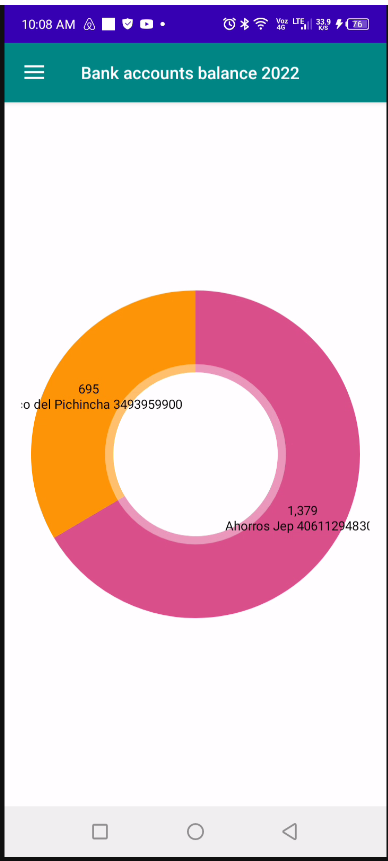

Synchronisation Bureau & Mobile
Interface de synchronisation reliant l’application mobile au logiciel de gestion financière de bureau.

Interface Principale de l’Application Mobile
Tableau de bord principal de l’application mobile offrant un accès aux outils financiers, au suivi des dépenses et aux analyses bancaires.

Indicateur Comparatif des Dépenses Mensuelles
Indicateur affichant les dépenses mensuelles actuelles pour la date sélectionnée comparées à la même période du mois précédent.

Enregistrement des Transactions Bancaires
Interface principale permettant d’enregistrer et de gérer les transactions bancaires directement depuis l’application mobile.

Indicateur de Solde des Comptes Bancaires
Indicateur affichant les comptes bancaires, les soldes actuels et les tendances des soldes comparés au même jour du mois précédent.

Analyse Mensuelle des Soldes de Comptes
Graphique affichant les soldes mensuels du compte bancaire sélectionné ou du total combiné de tous les comptes pendant l’année sélectionnée.

Répartition Annuelle des Soldes Bancaires
Graphique en anneau visualisant les soldes annuels finaux répartis entre tous les comptes bancaires.

Analyse Radar des Dépenses
Graphique radar affichant les dépenses mensuelles totales ou les dépenses annuelles pour l’année sélectionnée.

Répartition Annuelle des Dépenses
Graphique en anneau visualisant la répartition des dépenses annuelles pour l’année sélectionnée.